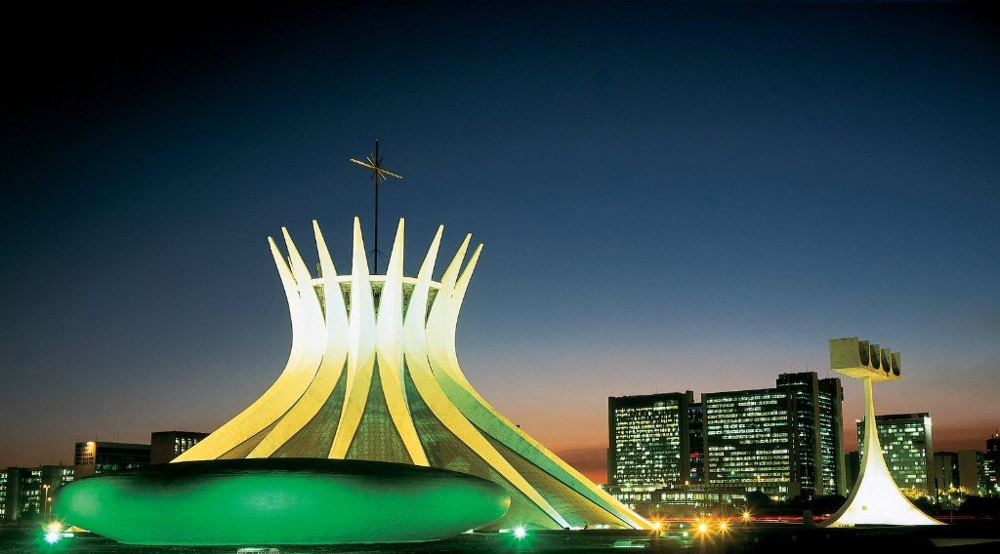

 En la década de los sesenta Brasil emprendió la construcción de su nueva capital, Brasilia. Esto fue el final de un proceso de industrialización arrancado un par de años atrás. Sin embargo, el progreso nacional se quedó en supuesto, pues terminó beneficiando únicamente a los sectores de alto poder económico y no a la nación por entero. La modernidad suele relacionarse con una transformación del paisaje urbano. De 1947 al 1963 se crearon museos, escuelas de arte, teatros y otras instituciones gubernamentales de la misma índole, que en conjunto instauraron un sistema cultural que respondía a la comunicación de “lo nacional”, de las particularidades de la cultura brasileña.
Ya entrada la década, surgieron nuevas expresiones artísticas como el cinema novo, los teatros de grupo y el género musical del tropicalismo. En la pintura se retomó lo figurativo pero ahora con la influencia internacional del Pop Art y la Nueva Figuración, movimiento que se distingue por enfatizar el contenido sobre la forma. No obstante, el discurso nacionalista rayó en la censura y en consecuencia surgieron, también, movimientos de protesta y arte documental, ambos retomando temas de la cultura popular pero bajo lenguajes experimentales. Uno de los artistas brasileños que proliferaron durante esta época fue Rubens Gerchman (1942-), quien previamente laboró como publicista. En sus obras retoma la comunicación mediática institucionalizada pero para manipularla e inyectarla de sarcasmo. Gerchman es tajantemente crítico con respecto a los ideales sociales y tiene una marcada intención de hacer reflexionar al espectador sobre su propia realidad sociopolítica.En algunas de sus pinturas representa a las señoritas de concurso de belleza; no las pinta hermosas sino mulatas y “feas”. Representa entonces lo contrario a lo bello para remarcar el vacío o la superficialidad del espectáculo.
Por otro lado, este artista tiene múltiples lienzos donde plasma al equipo de futbol nacional. De igual manera, no pinta a estos deportistas como los grandes héroes del pueblo sino como hombres ridículos, de rostros y cuerpos distorsionados. Así, apunta rotundamente que este tipo de espectáculo es utilizado para distraer al país del acontecer político. De hecho, fue durante los 60 que Brasil ganó la Copa Mundial, pero entre dichas celebraciones se vivía, también, en plena dictadura. Las pinturas de Gerchman exhiben al futbol como un instrumento de manipulación implementado por el gobierno… punto que parecen aún estar en vigencia.